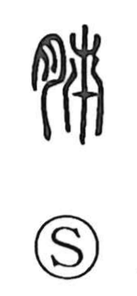

肺

Kun: | On: hai
lung
Explanation
Shirakawa reads 肺 as a phono-semantic compound: the flesh radical on the left marks a bodily organ, while the right-hand component 市 supplies the on reading hai. He traces 市 back to an earlier graph depicting luxuriant vegetation swaying, an image of rhythmic motion that befits an organ that moves with the breath. From this formation the character came to denote the chief breathing organs, the lungs, and by extension could also refer to the inner mind or heart.